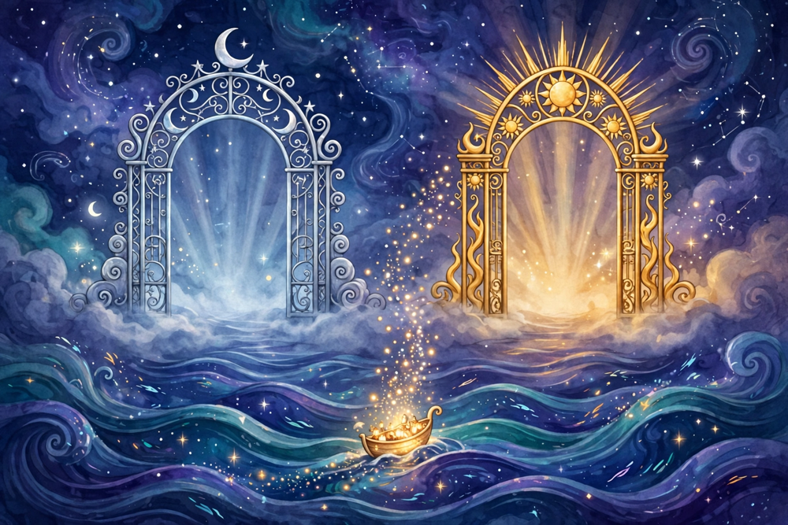
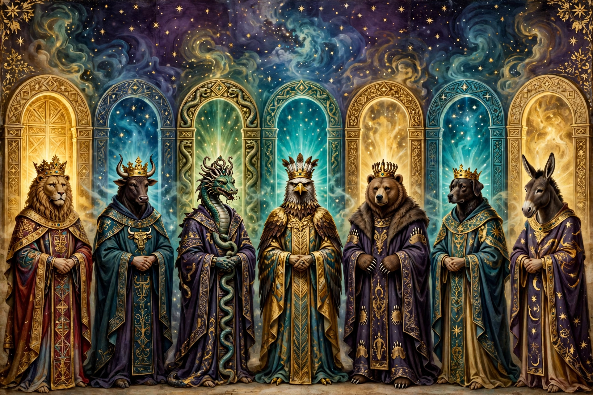

🔑 The Passwords & The Two Gates 🌙
Page 2 of The Gnostic Map — the names, the keys, and the doors of the sun and moon, in simple words.

🚪 The seven gatekeepers
The road up passes seven gates, and a keeper guards each one. You could not sneak past and you could not fight past. You had to know the keeper's name and speak as one who belongs above. Tap each gate, from the lowest to the highest, and see what the soul says.
🎧 Hear the seven names, said slowly

🗣️ The Phrase
Every version of the teaching, in every book, comes back to one sentence the soul speaks at the gates:
"I know myself, and I know where I have come from.
I am a child of the Light above, returning to my own place.
Stand aside."
At the world-maker's own court, the dying were taught one sharper line: "If your mother does not know her root — I know mine."
🗝️ The three parts of the key
Each keeper must be called by his true name. To name a power is to stand outside its spell. The chief of them all is Ialdabaoth, the lion-faced maker of this world, who believes he is God alone.
The Phrase above: who you are, whose you are, and where you are going. The gatekeepers can only hold what belongs to their world — a soul that can truthfully say "I am not yours" is already out of their hands.
Knowing wasn't enough — the soul had to be marked. The marks were given in this life: baptism, the holy oil, and the highest mystery, the bridal chamber. Paul, rising in his Apocalypse, simply shows the sign to the old man on the throne — and the gates open.
In the Books of Jeu the keys get wonderfully exact: hand-signs, drawn seals, and the command spoken to each guardian — "Retire!" — followed by the guardian's own name and number. And at baptism, the Sethian books name the three keepers of the living water — Micheus, Michar, and Mnesinous — and sing the great key-name over the water: "Iesseus Mazareus Iessedekeus."
☀️🌙 The Two Gates: the sun and the moon
First, the warning: in the oldest books, the sun and moon are the enemy's clock — the Archons built them to run fate, and everything below the moon is the zone where things are born and die. But the rescue turns the clock into two doors.

The first door, in both directions. Souls come down through her rhythm into bodies, and leave by her door when the body ends. In the later teaching she becomes a ship that fills: watch her wax — she is gathering freed sparks like passengers — then wanes as she empties them upward. The moon filling and draining is the rescue schedule, written on the sky.
The great light gate. What the moon gathers, the sun receives and ferries home to the world of Light. He is the stronger door, the open day after the moon's night passage — the sign that the road up ends not in darkness but in morning.
So the pairing holds, just as it feels: moon = female = death, return, and the gathering · sun = male = life, and the road home. Both began as the prison's machinery. Gnosis turns them into the way out.
💛 A mother waits
That question — can I wait for my kids after death, and bring them with me? — is the most human one in this whole system. And the old books actually take it seriously, because the Gnostic myth is, at its heart, a mother waiting for her children. Here is the honest shape of it.
The hard part first: in the strict teaching, nobody can carry another soul through the gates. The key isn't a ticket a parent can hold for a child — it's knowledge inside the person. When the gatekeeper asks "who are you and where have you come from," each soul answers for itself. That's why the Gnostics taught the words at deathbeds, out loud, to their own people: the answer has to live in the one speaking it.
But waiting? Yes. Waiting is built into the map.
🌤️ The Soul People's road ends in the Middle Rest — and in the Valentinian telling, that place is literally a waiting place. Souls rest there together, with the Mother, until the gathering is complete. Nobody's story gets sealed up early while others are still on the road.
🌟 And above the whole system stands Sophia — a mother who waits outside the Pleroma herself until every last one of her scattered children, every seed of light, is found and formed. She does not go in and close the door. In the Pistis Sophia she sings and waits while her children are rescued one by one, and the promise running through those books is that none of her light is finally left behind.
And the part that belongs to this life: the Gnostic way of "bringing them with you" isn't carrying them later — it's handing them the keys now. The names, the phrase, the knowing who they are. Knowledge is the one thing in that whole cosmos that can be given away without being lost. A mother teaching her children the words was exactly how those communities expected the rescue to travel — person to person, house to house.
So in their terms: you may not be able to answer the gatekeeper for them. But you can wait in the Rest without being alone, the Mother of the whole story is waiting too — and the sparks you wake up in them in this life are the part of "bringing them" that is truly yours to do.